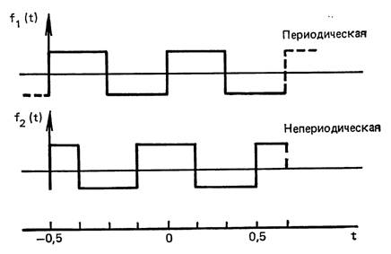
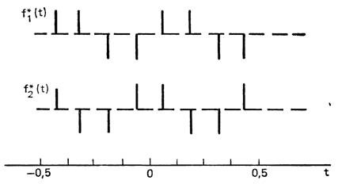
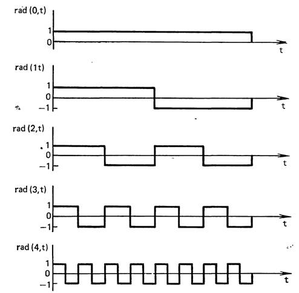
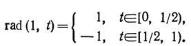
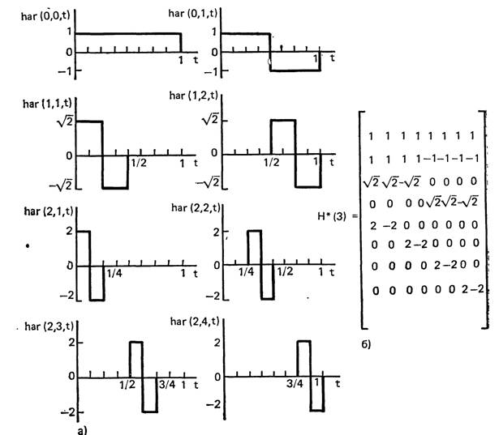
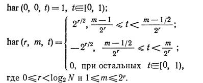
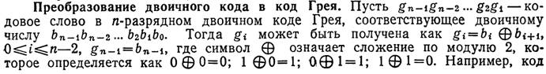
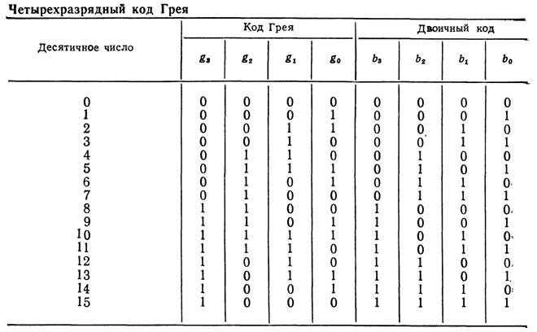
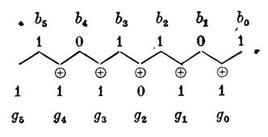
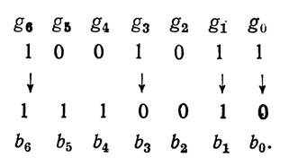

Понятие частоты применимо
к множеству синусоидальных (периодических) функций, точки пересечения нулевого
уровня которых равномерно распределены по интервалу. Этот параметр обозначается
f и позволяет различать отдельные функции, принадлежащие множествам {cos 2πft}
и {sin2πft}, и интерпретируется как число
полных периодов (или половина числа пересечения нулевого уровня)
синусоидальной функции в секунду.
Обобщенная частота может
быть определена как половина среднего числа пересечений нулевого уровня в
секунду. Хармут ввел термин «частость» при описании обобщенной частоты и применил
его для различения функций, точки пересечения нулевого уровня которых
распределены неравномерно по интервалу и которые не обязательно являются
периодическими. В случае синусоидальных функций понятие частости совпадает с
понятием частоты. Пользуясь приведенным выше определением периодических и
непериодических функций, получим:
1.
частость
периодической функции равна половине числа пересечений нулевого уровня в
секунду,
2.
частость
непериодической функции равна половина числа пересечений нулевого уровня в
секунду, если этот предел существует.
Для иллюстрации
рассмотрим непрерывные функции f1(t) и f2(t)приведенные на рис. 7.1, которые определены на полуоткрытом
интервале [—0,5; 0,5).

Рис. 7.1. Определение
частости непрерывной функции
Каждая функция имеет
четыре пересечения нулевого уровня на интервале, и, следовательно, частость
каждой из них равна двум. Подобно тому, как частота измеряется числом периодов
в секунду (герцах), частость определется числом пересечении нулевого уровня в секунду;
для нее можно использовать сокращение «zps»1 (от “zero per second” – число пересечений нулевого уровня
в секунду).
Приведенное выше
определение частости можно с небольшими изменениями применять к
соответствующей дискретной функции f*(t) получаемой из f(t) с помощью
равномерной дискретизации. Если число перемен знака в секунду функции f*(t)
равно ŋ, то частость f*(t) определяется как ŋ /2 или (ŋ + 1)/2
при ŋ четном или нечетном соответственно. Рассмотрим дискретные функции f*1(t)
и f*2(t) полученные в результате дискретизации функций, приведенных
на рис. 7.1, при расположении отсчетов в восьми равноотстоящих точках (рис. 7.2).
Из рис. 7.2 видно, что ŋ1= 3 и ŋ2 = 4. Таким
образом, частость каждой из функций f*1(t) и f*2(t) равна
2, как и в случае f1(t) и f2(t)

Рис. 7.2. Определение
частости дискретной функции
7.2. Функции
Радемахера и Хаара.
Функции Радемахера,
рассмотренные им в 1922 г., представляют собой неполную систему
ортонормированных функций. Функция Радемахера с индексом т, обозначаемая
rad(m,t), имеет вид последовательности
прямоугольных импульсов и содержит 2m-1 периодов на полуоткрытом
интервале [0,1), принимая значения + 1 или —1 (рис. 5.3). Исключение
составляет функция rad (0, t), которая имеет вид единичного импульса.

Рис. 7.2.1 Функции
Радемахера
Функции Радемахера—
периодические с периодом 1, т. е. rad (m, t) =
rad (m, t+1).
Кроме того, они обладают
периодичностью и на более коротких интервалах [5]: rad (m, t + n2l-m)
= rad (m, t), m=1, 2,...; n = ±1, ±2,
... Функции Радемахера можно получить с помощью рекуррентного соотношения rad
(m, t) = rad (1, 2m-11),
Где

Множество функций Хаара
{har(n,m,t)} образующих периодическую, ортонормированную и полную систему функций,
было предложено им в 1910 г. На рис. 7.2.2 изображены первые восемь функций Хаара.

Рис. 7.2.2 Непрерывные
функции Хаара (а) и дискретные функции Хаара (б) при
Рекуррентное соотношение,
позволяющее получить {har (n,m,t)}, имеет вид

Дискретизация системы
функций Хаара, показанных на рис. 7.2.2, приводит к матрице, изображенной на
рис. 5.46, каждая строка которой является дискретной функцией Хаара {har(n, m, t)}. Полученные таким образом матрицы используются для преобразования
Хаара и обозначаются Н*(n), где n=log2N.
В некоторых практических
приложениях, например в аналого-цифровых преобразованиях, желательно
использовать коды, у которых все следующие друг за другом кодовые слова
различаются только одной цифрой в некотором разряде. Коды, обладающие таким
свойством, называются циклическими. Очень важным циклическим кодом является код
Грея. Четырехразрядный двоичный код Грея приведен в табл. П7.5.1. Этот код
обладает тем важным свойством, что двоичное представление числа может быть
легко преобразовано в код Грея с помощью полусумматоров.

Таблица П 7.5.1.

Грея, соответствующий двоичному числу 101101,
может быть образован следующим образом:

Преобразование кода Грея в двоичный. Преобразование кода Грея в двоичный
код начинаем с цифры самого левого разряда и двигаемся направо, принимая bi=gi,
если число единиц, предшествующих gi, четно, и bi=gi
(черта обозначает дополнение), если число единиц, предшествующих gi нечетно. При этом нулевое число
единиц считается четным. Например, двоичное число, соответствующее коду Грея
1001011, имеет вид 1110010 и может быть получено следующим образом:
